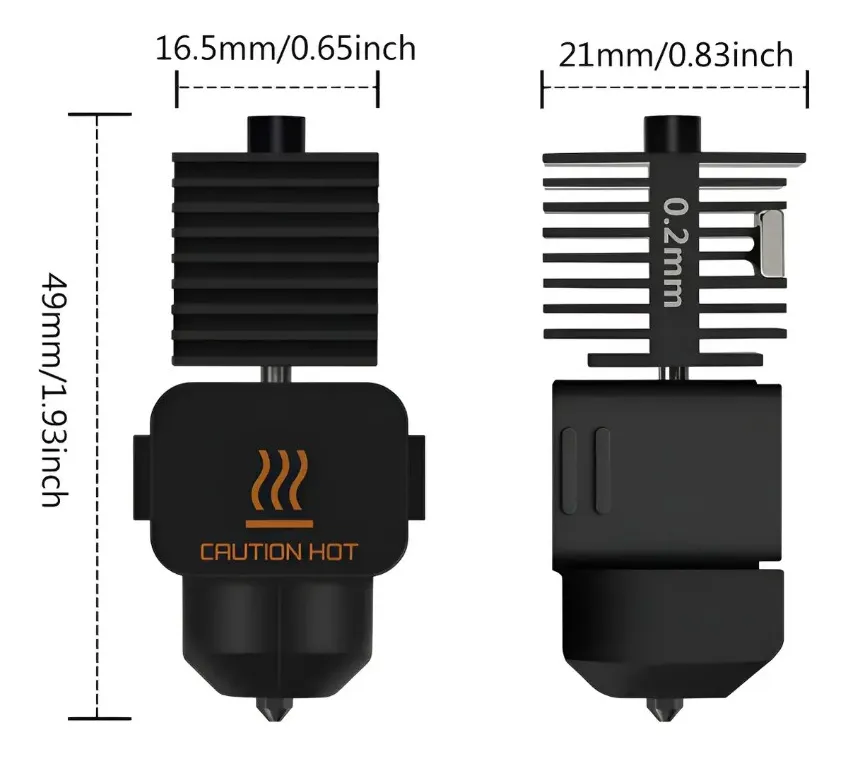
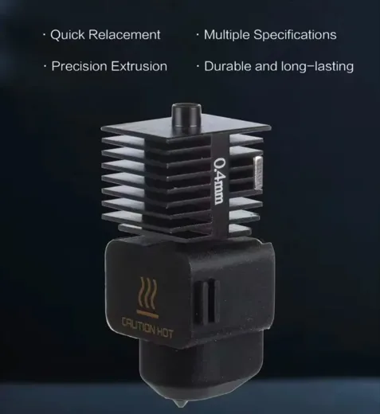

Hotend 0.2 mm · A1 / A1 mini
Detalle fino. Miniaturas, figuras y piezas chicas con textura.
Inicio · Hotends y boquillas · Hotend de 0.6 mm · A1 y A1 mini
Refacción · Bambu Lab A1 y A1 miniHotend completo de acero endurecido en 0.6 mm para Bambu Lab A1 y A1 mini. Más rápido para piezas funcionales, con paredes más sólidas. Aguanta filamentos abrasivos que se comen una boquilla de latón en pocos kilos.
$499 MXN

| Tipo de refacción | Hotend completo |
|---|---|
| Diámetro | 0.6 mm |
| Material de la boquilla | Acero endurecido |
| Compatibilidad | Bambu Lab A1 y A1 mini |
| Medidas | 16.5 × 21 × 49 mm |
| Filamentos | PLA, PETG, ABS y abrasivos |
| Contenido | 1 hotend completo |
| Garantía | 30 días del vendedor |
| Envío | Gratis a todo México |
| SKU | EMI-HE-A1-0.6 |
| Precio | $499 MXN |
Precio de referencia en pesos mexicanos, con IVA incluido. El precio final, las promociones y los tiempos de entrega los define MercadoLibre al momento de la compra.
En la A1 y la A1 mini se cambia el hotend completo: el disipador, el bloque calefactor y la boquilla salen como una sola pieza. Se cambia en minutos sin desarmar el carro.
Mide 16.5 × 21 × 49 mm y las dos máquinas llevan exactamente la misma refacción. No es compatible con la serie H2, ni con la P1, ni con la X1.
La boquilla es de acero endurecido. El latón conduce mejor el calor, pero es blando y se desgasta rápido con cualquier filamento cargado: fibra de carbono, fibra de vidrio, materiales con brillo metálico o con partículas de madera. El acero aguanta mucho más y mantiene el diámetro estable.
El diámetro decide dos cosas al mismo tiempo: cuánto detalle sale y cuánto tarda la impresión. Una boquilla más fina deposita hilos más delgados, así que resuelve mejor los bordes y las texturas, pero necesita muchas más pasadas para rellenar la misma área.
El 0.6 mm es más rápido que el 0.4 y deja paredes más sólidas, así que es el de las piezas funcionales. Pierdes algo de detalle en bordes y texturas finas.
¿Quieres el detalle largo? Lo escribimos en el blog: qué boquilla usar.
| Diámetro | Para qué |
|---|---|
| 0.2 mm | Detalle fino: miniaturas, figuras, piezas chicas |
| 0.4 mm | Uso general: el de fábrica, el más versátil |
| 0.6 mm | Piezas funcionales: más rápido, paredes sólidas |
| 0.8 mm | Piezas grandes: velocidad por encima del detalle |
Todos van al mismo precio y con la misma boquilla de acero endurecido. Cambiar de diámetro es la forma más barata de cambiar el compromiso entre detalle y velocidad.
Detalle fino. Miniaturas, figuras y piezas chicas con textura.
El de uso general. Es el que trae la máquina de fábrica.

Para piezas grandes y rápidas, cuando el detalle no importa.

Para A1, P1P, P1S, X1, X1C y X1E. La A1 mini no lleva ninguna de las dos medidas.
El inventario está en la Ciudad de México y los pedidos por MercadoLibre salen con envío gratis a todo el país, con 30 días de garantía del vendedor y devolución gratuita.
Si necesitas varias piezas o no estás seguro de tu modelo, escríbenos por WhatsApp con una foto del extrusor.
Sí. La A1 y la A1 mini usan el mismo hotend, con el mismo montaje y el mismo conector. Es la misma pieza para las dos máquinas.
Lo que no es intercambiable es con otros modelos de Bambu Lab: la serie H2, la P1 y la X1 llevan piezas distintas.
Sale como una sola pieza: disipador, bloque calefactor y boquilla. Se cambia en minutos sin desarmar el carro.
Mide 16.5 × 21 × 49 mm. En la serie H2 el conjunto es distinto y ahí lo que se sustituye es la boquilla con su disipador.
El latón conduce mejor el calor, pero es blando y se desgasta rápido con cualquier filamento cargado: fibra de carbono, fibra de vidrio, materiales con brillo metálico o con partículas de madera. Una boquilla de latón puede perder su diámetro en pocos kilos de material abrasivo.
La de acero endurecido aguanta mucho más y mantiene el diámetro estable, así que la calidad de la pieza no se va degradando con el uso.
El 0.6 mm es más rápido que el 0.4 y deja paredes más sólidas, así que es el de las piezas funcionales. Pierdes algo de detalle en bordes y texturas finas.
Los cuatro diámetros —0.2, 0.4, 0.6 y 0.8 mm— valen lo mismo y llevan la misma boquilla de acero endurecido, así que cambiar de diámetro es la forma más barata de cambiar el compromiso entre detalle y velocidad.
No hay un número fijo: depende del material y de las horas de uso. Con PLA y PETG normales una boquilla de acero endurecido dura muchísimo.
Conviene cambiarla cuando aparecen síntomas de desgaste: la primera capa deja de salir pareja aunque la calibración esté bien, el extrusor empieza a saltar, se ve subextrusión constante o el atasco vuelve al poco tiempo de haber limpiado. Muchos talleres prefieren tener uno de repuesto en el cajón para no parar la producción.
Escríbenos por WhatsApp si necesitas varias piezas o no estás seguro de tu modelo de impresora.